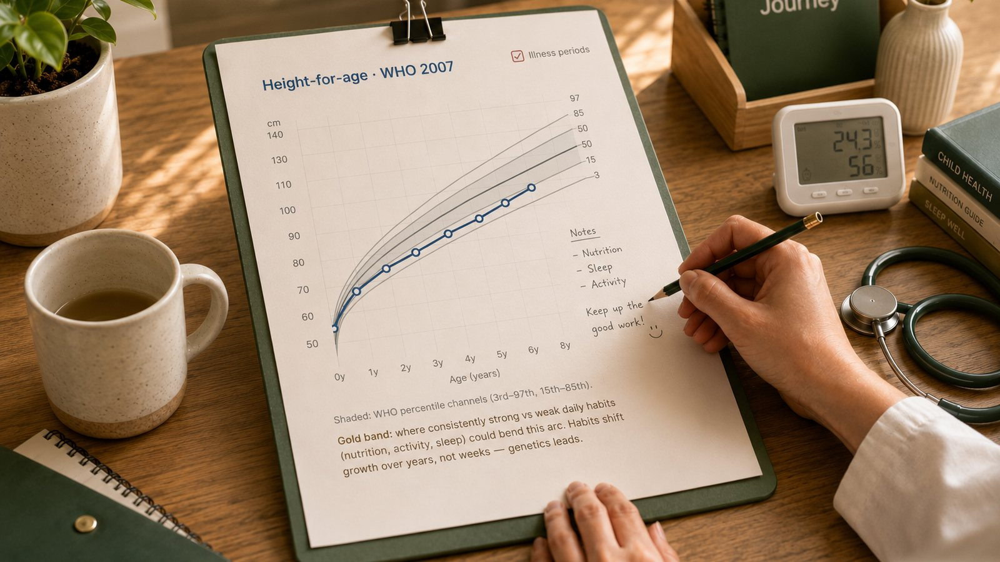

วิทยาศาสตร์การเจริญเติบโต
ไขข้อข้องใจอย่างตรงไปตรงมาเพื่อความสบายใจของพ่อแม่ — ทุกข้อมูลอ้างอิงงานวิจัยที่น่าเชื่อถือ นำเสนอตามความจริง และไม่มีการันตีเกินขอบเขตวิทยาศาสตร์

พื้นฐานการเจริญเติบโต
ไม่มีตัวเลขเดียวที่เด็กทุกคนต้องไปให้ถึง percentile กับ z-score หมายความว่าอะไรจริง ๆ ทำไม 50 ไม่ใช่เป้าหมาย ทำไมกราฟที่เลือกถึงเปลี่ยนคำตอบได้ และทำไมแนวโน้มการเติบโตคือเรื่องราวที่แท้จริง
อ่านบทความ →ความอุ่นใจ
เด็กเตี้ยส่วนใหญ่แข็งแรงดี วิธีอ่านความเร็ว เปอร์เซ็นไทล์ และอายุกระดูก สัญญาณเตือนจริง ๆ และความจริงเรื่องการรักษาด้วยโกรทฮอร์โมน
อ่านบทความ →ความเร็วการเจริญเติบโต
วิทยาศาสตร์ของความเร็วในการเจริญเติบโต และหกระบบ (พันธุกรรม ฮอร์โมน การนอน สารอาหาร กิจกรรม อายุกระดูก) ที่กำหนดการเติบโตของลูก
อ่านบทความ →บทความวิทยาศาสตร์การเจริญเติบโตเพิ่มเติมเร็ว ๆ นี้